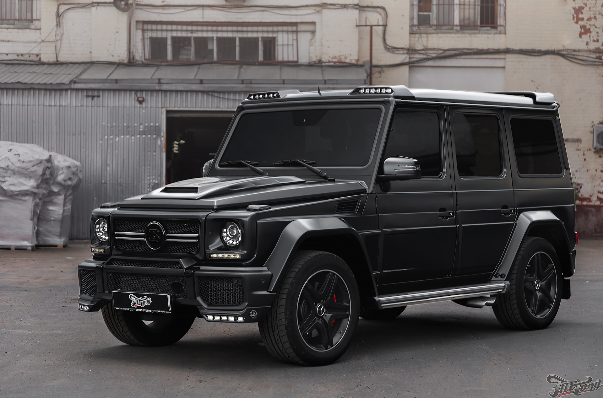

Масштабная реорганизация салона
Если снаружи Гелендваген остался на 100% узнаваемым, то внутри преобразился буквально в каждой детали. При этом любопытным является тот факт, что заведовала модификацией интерьера, пожалуй, самого «мужского» автомобиля дизайнер-женщина – Лилия Чернаева. Неудивительно, что при разработке уклон был сделан в сторону технологичности и комфорта, однако и в новом видении нашлось место топорным и даже грубоватым элементам, не дающим забыть, что перед нами салон именно брутального внедорожника, а не седана или купе. Но обо всем по порядку.
Сначала заострим внимание на основательно перекроенной передней панели, в оформлении которой немало заимствований у последних новинок Mercedes – седанов и . Например, новое рулевое колесо с удобным джойстиком управления коробкой передач, очевидно, досталось Гелендвагену от флагманской четырехдверки. Что касается круглых дефлекторов вентиляции, пришедших на смену архаичным прямоугольным, то они без сомнений перекочевали с . Вообще же панель в целом и центральная консоль в частности стали выглядеть гораздо более стильно благодаря появлению современных информационных дисплеев и кнопочных блоков.
